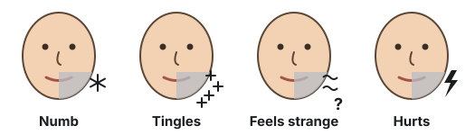

Wisdom tooth removal: the risk to your nerve
The roots of this wisdom tooth wrap around a nerve. Taking the tooth out can damage the nerve and make your lip and chin numb.
What is the problem?
Your wisdom teeth (third molars) are the last teeth at the back. An impacted lower wisdom tooth is stuck under the gum and bone. It has not come through the gum (it is unerupted). It cannot grow in the right way.
The nerve
A nerve runs in a tube of bone inside your lower jaw. Here we call it the jaw nerve. Its medical name is the inferior alveolar nerve. Blood vessels also run with it in the same tube. They are the inferior alveolar artery and vein.1
The jaw nerve gives feeling to your lower teeth and gums on the same side.1 Near the front of your jaw, a branch of it comes out of the bone through a small hole. This branch is the chin nerve (mental nerve). It gives feeling to your lower lip and chin.2
Taking out a wisdom tooth can also hurt the nerve to your tongue (the lingual nerve).3 About 1 to 3 in 1,000 people may get lasting damage.456 This model does not show this nerve.
In this model, the roots of the wisdom tooth wrap around the nerve and artery.
Why taking the tooth out can hurt the nerve
To take the tooth out, the surgeon must lift the roots out of the bone. The roots curve around the nerve. So the nerve can be pressed or cut as the tooth comes out.7 The artery and vein can also tear and bleed.17
The chin nerve branches off the jaw nerve. So damage to the jaw nerve can also stop the chin nerve working well.2
What nerve damage feels like
Your lower lip, chin, teeth or gums on that side may:73

For most people, the feeling comes back within weeks to months (short-term damage). For some, it does not fully come back (long-term damage).789
The older you are, the higher the risk, and the less likely the feeling is to come back fully.710
How often does it happen?
Some wisdom teeth have roots close to the nerve. Reviews of many studies looked at these teeth. Rates vary, but for these teeth:
 About 7 in 100
About 7 in 100 About 1 in 100
About 1 in 100For a tooth like this, it is a good idea to see a specialist (an oral surgeon). They can check the tooth and talk with you about your choices.14
Sources
- Juodzbalys G, Wang HL, Sabalys G. Anatomy of mandibular vital structures. Part I: mandibular canal and inferior alveolar neurovascular bundle in relation with dental implantology. J Oral Maxillofac Res. 2010;1(1):e2. doi.org/10.5037/jomr.2010.1102
- Juodzbalys G, Wang HL, Sabalys G. Anatomy of mandibular vital structures. Part II: mandibular incisive canal, mental foramen and associated neurovascular bundles in relation with dental implantology. J Oral Maxillofac Res. 2010;1(1):e3. doi.org/10.5037/jomr.2010.1103
- Renton T, Yilmaz Z. Profiling of patients presenting with posttraumatic neuropathy of the trigeminal nerve. J Orofac Pain. 2011;25(4):333-344. PMID 22247929. pubmed.ncbi.nlm.nih.gov/22247929
- Lee J, Feng B, Park JS, et al. Incidence of lingual nerve damage following surgical extraction of mandibular third molars with lingual flap retraction: a systematic review and meta-analysis. PLoS One. 2023;18(2):e0282185. doi.org/10.1371/journal.pone.0282185
- Pichler JW, Beirne OR. Lingual flap retraction and prevention of lingual nerve damage associated with third molar surgery: a systematic review of the literature. Oral Surg Oral Med Oral Pathol Oral Radiol Endod. 2001;91(4):395-401. doi.org/10.1067/moe.2001.114154
- Petroni G, Passaretti A, Zaccheo F, et al. Lingual flap protection during third molar surgery: a literature review. Eur J Dent. 2021;15(4):776-781. doi.org/10.1055/s-0041-1730042
- Sarikov R, Juodzbalys G. Inferior alveolar nerve injury after mandibular third molar extraction: a literature review. J Oral Maxillofac Res. 2014;5(4):e1. doi.org/10.5037/jomr.2014.5401
- Kang F, Sah MK, Fei G. Determining the risk relationship associated with inferior alveolar nerve injury following removal of mandibular third molar teeth: a systematic review. J Stomatol Oral Maxillofac Surg. 2019;121(1):63-69. doi.org/10.1016/j.jormas.2019.06.010
- Rico-Barroso L, Barroso-Medel M, Gutiérrez-Pérez J, et al. Coronectomy as an alternative technique to complete extraction of mandibular third molars with risk of nerve injury. Med Oral Patol Oral Cir Bucal. 2026;31(1):e19-e30. doi.org/10.4317/medoral.27459
- Queral-Godoy E, Valmaseda-Castellón E, Berini-Aytés L, et al. Incidence and evolution of inferior alveolar nerve lesions following lower third molar extraction. Oral Surg Oral Med Oral Pathol Oral Radiol Endod. 2005;99(3):259-264. doi.org/10.1016/j.tripleo.2004.06.001
- Derbishi AA, Altayyar RA, Alsubaiei AS, et al. Coronectomy versus total extraction for third molar surgery: a systematic review and meta-analysis. Cureus. 2026;18(3):e105646. doi.org/10.7759/cureus.105646
- Kang FW, Yuan XR, Li GC, et al. Coronectomy in lower third molar surgery: a systematic review and meta-analysis. J Oral Maxillofac Surg. 2025;83(5):601-615. doi.org/10.1016/j.joms.2025.01.014
- Cervera-Espert J, Pérez-Martínez S, Cervera-Ballester J, et al. Coronectomy of impacted mandibular third molars: a meta-analysis and systematic review of the literature. Med Oral Patol Oral Cir Bucal. 2016;21(4):e505-e513. doi.org/10.4317/medoral.21074
- Faculty of Dental Surgery, Royal College of Surgeons of England. Parameters of care for patients undergoing mandibular third molar surgery. London: RCS England; 2020. www.rcseng.ac.uk/-/media/Files/RCS/FDS/3rd-molar-guidelines--April-2021-v3.pdf
This page is for a research study at Nagoya University. Version 1.5, 21 October 2026.